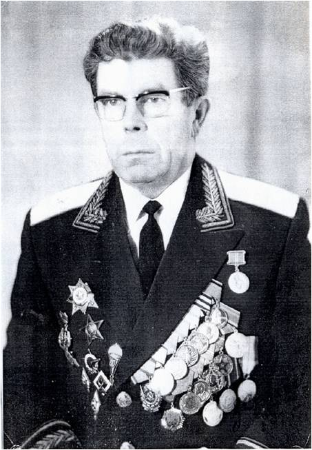

Стахеев Василий Иванович
Стахеев Василий Иванович
28.10.1920 – 20.05.2003)
Родился в деревне Подгорка Пыжугского сельсовета семье крестьянина. После окончания начальной школы в д.
Подгорка учился в Кичменгско-Городецкой школе колхозной молодежи.
После окончания в 1937 году 10 классов, сдал экстерном экзамены в педучилище и был назначен учителем
Исадовской начальной школы (Сараевский сельсовет).
В 1938-39 гг. работал учителем Емельяновской неполной средней школы, а в конце
1939 г. учителем физики Кичменгско-Городецкой школы колхозной молодежи.
В декабре 1939 года был призван в Красную Армию, служил пулеметчиком под Киевом в г. Васильков. 16 июня 1941 года окончил военное училище и в звании лейтенанта, командира взвода противотанковых пушек, знаменитых «сорокапяток, вступил в первый бой 23 июня 1941 года под городом Луцком (Западная Украина). Участвовал в боях в званиях: лейтенанта – командира взвода, затем роты, батальона, после второго ранения служил в штабе корпуса в звании майора. Несколько раз был ранен в руки, ноги, был дважды контужен. Участвовал в рукопашной схватке. За годы войны был артиллеристом, парашютистом- десантником, разведчиком. После войны окончил специальную школу, а затем военную академию и служил в Вооруженных Силах СССР до 1977 года.
Занимал должности начальника разведки бригады, дивизии, армии, округа и Сухопутных войск Вооруженных Сил СССР. В 1964 году получил звание генерал - майора. Проходил службу:
- на Востоке (Приморье, Забайкалье, Сахалин, Камчатка, Чукотка, Курильские острова)
- на Севере (о. Врангеля, о. Диксон, Кольский полуостров и др.)
- на юге (Туркестан, Ашхабад, Кушка, Ташкент, Алма-Ата)
- на Кавказе (Турецкая и Иранская граница)
- в социалистических странах (Корея, Венгрия, Чехословакия, Германия)
- в северной Африке (Египет).
Уволился в запас в 1977 году. Награжден орденами: Отечественной войны первой степени (дважды), Трудового Красного Знамени, Красной Звезды, За службу Родине 3 степени. Медалями: «За отвагу», «За боевые заслуги», «За отличие в защите государственной границы» и еще 16 медалями, в том числе 4 от социалистических стран.
В последние годы занимался литературной деятельностью – к 45-летию Победы в Великой Отечественной войне написал автобиографическую повесть «Памятный рассвет» о боевом пути в годы войны, о своих боевых друзьях. В апреле 1983 года приезжал на родину в Кичменгский Городок на открытие районного краеведческого музея и картинной галереи.
В декабре 1939 года был призван в Красную Армию, служил пулеметчиком под Киевом в г. Васильков. 16 июня 1941 года окончил военное училище и в звании лейтенанта, командира взвода противотанковых пушек, знаменитых «сорокапяток, вступил в первый бой 23 июня 1941 года под городом Луцком (Западная Украина). Участвовал в боях в званиях: лейтенанта – командира взвода, затем роты, батальона, после второго ранения служил в штабе корпуса в звании майора. Несколько раз был ранен в руки, ноги, был дважды контужен. Участвовал в рукопашной схватке. За годы войны был артиллеристом, парашютистом- десантником, разведчиком. После войны окончил специальную школу, а затем военную академию и служил в Вооруженных Силах СССР до 1977 года.
Занимал должности начальника разведки бригады, дивизии, армии, округа и Сухопутных войск Вооруженных Сил СССР. В 1964 году получил звание генерал - майора. Проходил службу:
- на Востоке (Приморье, Забайкалье, Сахалин, Камчатка, Чукотка, Курильские острова)
- на Севере (о. Врангеля, о. Диксон, Кольский полуостров и др.)
- на юге (Туркестан, Ашхабад, Кушка, Ташкент, Алма-Ата)
- на Кавказе (Турецкая и Иранская граница)
- в социалистических странах (Корея, Венгрия, Чехословакия, Германия)
- в северной Африке (Египет).
Уволился в запас в 1977 году. Награжден орденами: Отечественной войны первой степени (дважды), Трудового Красного Знамени, Красной Звезды, За службу Родине 3 степени. Медалями: «За отвагу», «За боевые заслуги», «За отличие в защите государственной границы» и еще 16 медалями, в том числе 4 от социалистических стран.
В последние годы занимался литературной деятельностью – к 45-летию Победы в Великой Отечественной войне написал автобиографическую повесть «Памятный рассвет» о боевом пути в годы войны, о своих боевых друзьях. В апреле 1983 года приезжал на родину в Кичменгский Городок на открытие районного краеведческого музея и картинной галереи.